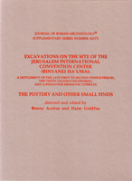

B. Arubas and H. Goldfus
Excavations on the Site of the Jerusalem International Convention Center (Binyanei Ha'uma): The Pottery and Other Small Finds
Journal of Roman Archaeology Supplementary Series 60: Portsmouth, Rhode Island, 2005
 |
The 1992 excavations at the site (map ref. 1693/1326; fig. 1 on p. 6) had been preceded by two excavations directed in 1949 and 1968 by M. Avi-Yonah. The 1949 excavation is knovvn by the Arabic name, Sheikh Badr. The 1968 excavation, conducted adjacent to the 1949 work, was known by Giv'at Ram, the new name given to the whole area after 1949. The ancient site is not yet firmly identified with any name found in the ancient sources, but we may tentatively suggest that it might be Iasonis pagus (the village of Jason), rather than Deir Yasin (which is now the modern neighbourhood of Giv'at Shaul, c. 1 km to the west of our site). Air photographs taken before the area was covered by modern roads and buildings, coupled with the evidence of excavations and occasional finds, indicate that the ancient site occupied c.4.5 ha. It covered the slopes of the upper part of the elongated spur of Giv'at Ram, chiefly around its summit (at 825 m asl). The archaeological discoveries indicate that the site was inhabited from Iron Age II to the Byzantine period (late 8th c. B.C. to early 7th c. A.D.); meager finds from the Ummayad, Abassid and Mameluke periods do not seem to point to any permanent occupation after the mid-7th c. The site's strategic location at the top of the ascent from the coastal plain (or the start of the descent for those leaving the old city of Jerusalem ) (fig. 1b on p. 6) may be one reason for its inhabitation over such a long span. The Roman road from Joppa (Jaffa) via Nicopolis (Emmaus) to Jerusalem, which was one of the two main routes from the coastal plain to Jerusalem, passed through a saddle between the N slopes of the site and the S slopes of knoll 829 (northeast of the modern Central Bus Station) to the north (fig. lc). From here the road descended gradually, following the course of the present-day Jaffa road, into the city which lay some 1.5 Roman miles to the east. While relatively late in construction, this Roman route probably reflects upon the importance of the site in earlier periods. The excavation of 1949 The first salvage excavation was conducted prior to the construction of the national convention center from July 4 to August 12, 1949 , by M. Avi-Yonah. In the two main excavation areas extending over c.1750 sq. m. (fig. lc on p. 6), he unearthed hewn installations, cisterns and pools of various sizes dated by him to the Herodian period, numerous bricks and tiles bearing stamps of the Tenth Legion, and the remains of a monastery, of which the most distinguishable part were the foundations of a three-aisled basilica (14 x 17.5 m). Adjoining its S wall was a chapel dedicated to St George, according to an inscription in its mosaic floor. This excavation was published only in an abbreviated fashion. Because of insufficient stratigraphic documentation, the pottery report published in Hebrew by M. Hershkovitz took the form or a typology; her report is published here (chapt. 13) in English, as are the 3 coins found then (G. Bijovsky, p. 223). The excavation of 1968 Prior to the construction of a new hotel (then the Hilton, now the Crowne Plaza ) to the south of Binyanei Ha'uma, in May to June 1968 Avi-Yonah conducted a second salvage excavation adjacent to the E side of one of the 1949 areas (fig. lc). In an excavation of c. 375 sq. m. he uncovered remains of additional installations of the late 2nd c. B.C.- A.D. 70, an oval-shaped potter's kiln (inside and around which were found wasters), and ready-to-use clay a preparation area for clay, and a deep water cistern. The area had then been covered by a thick layer of plaster upon which were found some large mortaria and many bricks, some bearing stamps of the Tenth Roman Legion. Some pits and other installations were assigned to the Byzantine period. A short report quickly followed. R. Rosenthal-Heginbottom, who assisted Avi-Yonah, then took it upon herself to publish the results of this work (chapter 12 below); the 20 coins from that excavation are again published by G. Bijovsky (pp. 223-24). The excavations of 1992-93 In the course of works for a new international convention center to, be built adjacent to and east of the other one (Binyanei Ha'uma), severe damage was caused to ancient remains. This prompted a large salvage excavation (early April to late September, 1992) conducted by the present authors on behalf of the IAA. The excavation concerned the parking lot (5000 m 2 ) lying east of the convention center (fig. 1c) but by the time the excavations began roughly 60% of this area had already been erased by bulldozers (fig. 1 on p. 10; fig. 3). Later, in July 1993, a small excavation in the NW corner of our larger one (Area D) was conducted by U. Ad. Up to September of 1993, Ad also recorded the process of dismantling the kilns of the Tenth Legion and the lifting of a mosaic floor of the Byzantine period. |
| Back to Publications | Table of Contents |